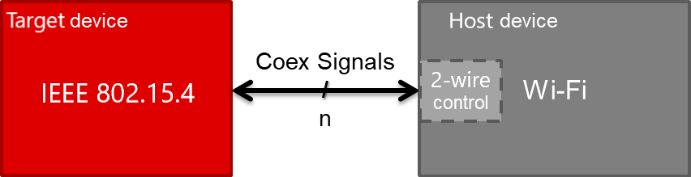
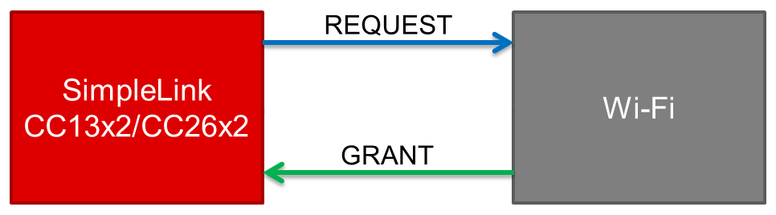
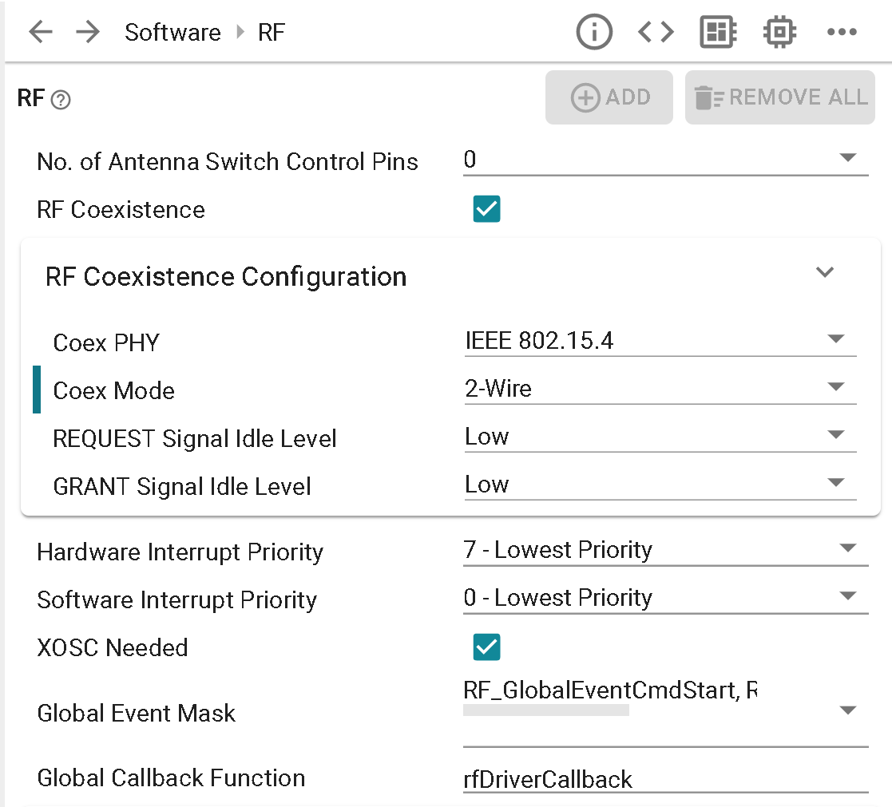
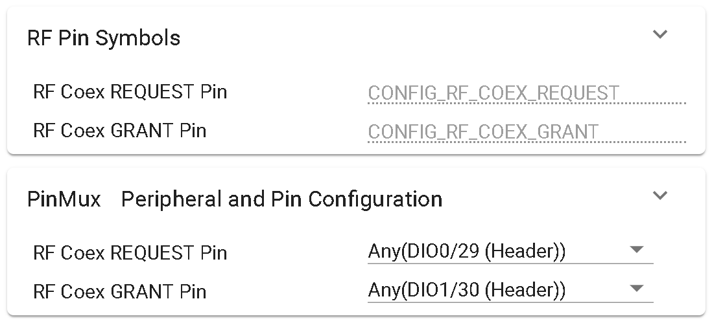
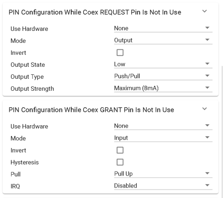
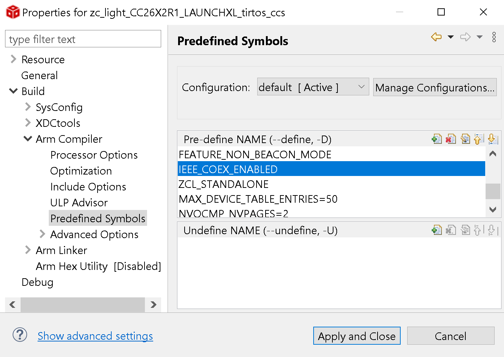

Wi-Fi Coexistence¶
The coexistence (coex) feature is a means to organize wireless packet traffic for communication protocols operating in the same frequency band. Instead of interfering with each other’s transmissions, affecting the RF performance, two co-located devices will have a dedicated communication interface to signal and determine access to the shared frequency band.
IEEE 802.15.4-based stacks and Wi-Fi channels both exist in the 2.4 GHz band over the same frequency space. When deploying both protocols in the same environments, careful planning must be performed to make sure that they don’t interfere with each other. Coexistence is particularly required when placing the Wi-Fi and 802.15.4 devices on the same platform (for example, a combined gateway). In these cases, the isolation between the antennas of the two devices is not enough to avoid impact on the performance. Without a proper coexistence mechanism, the RX of the 802.15.4 device will be affected by the Wi-Fi TX and vice versa. The coexistence mechanism protects the RX using GPIOs interface between the devices and allows visibility of the Wi-Fi TX/RX activity along with the ability to hold a Wi-Fi transmission.
The coex interface implemented for SimpleLink CC13xx/CC26xx devices is compatible with Wi-Fi devices that support two-wire coexistence mode. This approach is based on a shared control module between the coexisting devices, to decide which device is permitted to communicate in the shared frequency band. Many Wi-Fi devices implement their version of such a module, and the implemented coex feature is based on the assumption that the two-wire control module is embedded in the Wi-Fi device. The Wi-Fi device will therefore have a host role in this coex device scheme, as it controls the two-wire logic. The coexistence interface can be abstracted to a signal interface between the two devices, as illustrated in the figure below. For an example of supported Wi-Fi devices, view the available WiLink Products
{kind=link}

Block-diagram of coexistence interface abstraction
Note
Z-Stack also supports three-wire PTA coexistence, refer to the |COEXISTENCE| module for more information on this mode of operation
Two-wire Coex Interface¶
The supported IEEE 802.15.4 two-wire coex mode can be illustrated as in the block-diagram below. Seen from the 802.15.4 device, the REQUEST signal is defined as an output while the GRANT signal is defined as an input.
{kind=link}

Block-diagram of coexistence mode 2-Wire
Two-wire coexistence modes are not supported on all Wi-Fi devices. For example, the SimpleLink CC3135 and CC3235 Wi-Fi devices only support the 1-Wire REQUEST mode.
Coexistence Signaling¶
The coexistence signaling approach for the 2-Wire mode, using the two available signals, can be summarized as follows:
Coex REQUEST signal:
This is an output signal, controlled by the coex target. This signal is used to request that the Wi-Fi device disables transmissions for a given time. This is used during high priority situations for which IEEE 802.15.4 communication must proceed in order to maintain the network. It connects to the PA_SD pin of the WiLink device.
Coex GRANT signal:
This is an input signal, controlled by the coex host. This signal indicates whether Wi-Fi transmissions are active so that the 802.15.4 device will not execute simultaneous transmissions. This connects to the WiLink RX line.
Note
The terms signal assert and signal de-assert are used to describe the value change of a signal to respectively active and idle. For an active high signal, the signal is asserted by changing the signal value from low to high. For an active low signal, the signal is asserted by changing the signal value from high to low. For the opposite signal operation, de-assert, the signal value changes from active to idle.
| Active Level | Idle Level | Assert | De-assert |
|---|---|---|---|
| High | Low | Low → High | High → Low |
| Low | High | High → Low | Low → High |
In order to support time-shared signals, the coex feature is heavily dependent on accurate timing. What makes this implementation compatible with a Wi-Fi device that supports a two-wire interface, is the adherence to such timing requirements.
Configuration Options¶
The coex configuration options are made available from the RF driver module in SysConfig (TI Drivers → RF).
{kind=link}

Coexistence configuration options in SysConfig
Depending on the application, use case, and what Wi-Fi device the SimpleLink CC13xx/CC26xx IEEE 802.15.4 device is intended to coexist with, certain options are up to the user to configure.
Coex mode: Only two-wire mode is currently supported for the IEEE 802.15.4 PHY
Coex signal idle level: The signal idle level can be configured as low or high, which in other terms means that the same signal is either respectively active high or active low. By default both REQUEST and GRANT are set to idle level low.
Coex pin mapping: The coex signal(s) used for the two-wire interface with the Wi-Fi device can be mapped to any available DIO pins. This is configured in the pin mux section of the RF module, as illustrated in the figure below.
{kind=link}

Coexistence pin mapping
Coex pin configuration while not in use: Options are given in regards to the pin configuration for coexistence REQUEST & GRANT pins while they are not being used. For the lowest power operation it is recommended that the following selections be made accordingly.
{kind=link}

Coexistence pin configuration
After finishing with SysConfig settings, be sure to add IEEE_COEX_ENABLED inside Project Properties → Build → Arm Compiler → Predefined Symbols to fully enabled two-wire coexistence operation.
{kind=link}

Coexistence predefined symbol